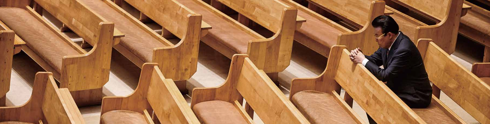
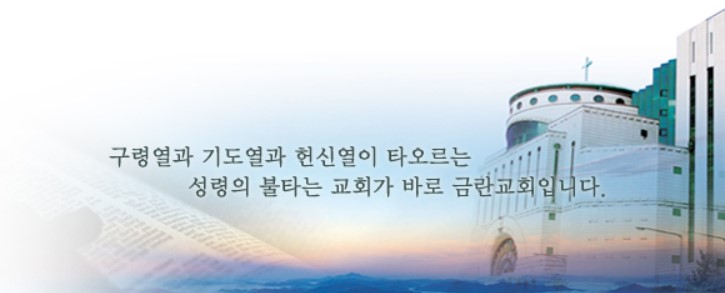

정암 김홍도
(1938 - 2020)
scroll

정암 김홍도 목사
프로필


정암 김홍도
(1938 - 2020)
scroll
프로필
목사 김홍도 (金 弘燾, Kim Hong-do)
1937.02.06 ~ 2020.09.02 (향년 83세)
기독교대한감리회 / 금란교회 원로목사 / 호: 정암(晶 岩,맑을 정, 바위 암)
1937년 평안남도 양덕군에서 태어나, 한국전쟁 전후의 혼란기 속에서 기독교 신앙을 지키며 성장하였습니다. 해방 직후 소비에트 군정 하에서 박해를 경험한 그는 서울로 남하한 뒤, 가난 속에서도 학업과 신앙을 이어갔습니다. 삯바느질을 하시던 어머니와 신문팔이를 하던 형제들의 생계를 도우며 어려운 청소년기를 보낸 김홍도는, 감리교신학대학교에서 신학을 전공하고, 이후 아세아연합신학대학교 석사와 풀러신학대학교 목회학 박사 과정을 거치며 학문과 목회를 병행했습니다.
목회 여정은 1963년, 경기도 가평의 작은 시골 교회인 상천교회에서 시작되었습니다. 당시 그는 담임 전도사로 부임하여 복음의 씨앗을 뿌리며 지역 사회 속에서 헌신적인 사역을 이어갔습니다. 1967년에는 광희문교회로 자리를 옮기며 더 넓은 도시 교회 사역에 참여하였고, 이듬해인 1968년에는 정식으로 목사 안수를 받으며 목회자로서의 공식적인 길에 들어섰습니다. 이후 1971년 3월에는 서울의 금란교회 담임목사로 부임하면서 한국 대형교회의 성장 흐름 속에서 핵심적인 위치에 서게 됩니다. 그는 수십 년에 걸쳐 금란교회를 한국 개신교를 대표하는 교회 중 하나로 성장시키는 데 큰 역할을 했습니다. 2008년에는 목회 일선에서 물러나 금란교회 원로목사로 추대되었고, 그의 평생 사역을 마무리한 후 2020년 9월 2일, 83세를 일기로 하나님의 부르심을 받았습니다. 김홍도 목사는 한국 보수 개신교계를 대표하는 인물로 평가되며, 그의 삶은 열정적인 설교, 강한 리더십, 그리고 사회와 시대를 향한 직접적인 메시지로 수많은 이들에게 영향력을 끼치는 인물이었습니다.
| 연도 | 월 | 학력 |
|---|---|---|
| 1963 | 2 | 서울 감리교 신학대학 졸업 (BA) |
| 1980 | 2 | 아세아 연합 신학대학원 졸업 (MA) |
| 1987 | 12 | Fuller Theological Seminary 목회학 박사 (D.Min) |
| 1994 | 4 | Indiana Wesleyan University 명예신학 박사 (D.D) |
| 2007 | 2.15 | 서울 기독교 대학교 명예철학 박사 (Ph.D) |
| 연도 | 월 | 내용 |
|---|---|---|
| 1963 | 3 | 가평군 상천교회 담임 |
| 1967 | 3 | 광희문교회 부담임 |
| 1971 | 3 | 금란교회 담임목사 |
| 2008 | 4 | 금란교회 동사목사 취임 |
| 2013 | - | 성역 50년 |
| 연도 | 월 | 내용 |
|---|---|---|
| 1989 | 3 | 중랑지방 감리사 역임 |
| 1996 | 10 | 기독교대한감리회 서울연회 감독 역임 |
| 1996 | 10 | 기독교대한감리회 감독회장 역임 |
| 1996 | 11 | 한국기독교 교회협의회(KNCC) 대표회장 역임 |
| 2000 | 5 | 세계기독교 파워목회 대표회장 역임 |
| 2003 | 4.12 | 한.미 기독교 목회자협의회 대표회장 역임 |
| 2006 | 4.17 | 서울기독교 총연합회(HCCCSA) 대표회장 역임 |
| 연도 | 월 | 내용 |
|---|---|---|
| 1991 | 5 | 제1대 법무부 갱생보호 전국기독교 협의회 회장 역임 |
| 1996 | 4 | (사)세계교화, 갱보협회 이사장 (현직) |
| 1997 | 1 | 아세아연합신학대학교 이사장 역임 |
| 2002 | 7 | 한.정.협 대표회장 역임 |
| 2007 | 7 | 한국미래포럼 총재 역임 |
| 2012 | 8 | 자유민주국민연합 총재 취임 |
| 연도 | 월 | 내용 |
|---|---|---|
| 2007 | 6.24 | 전 필리핀 대통령 라모스와 함께 세계평화상 수상 |
| 2008 | 1 | 대한민국 종교그랑프리 수상 (한국일보 제정) |
| 제목 |
|---|
| 불기둥 설교집 (01-40) |
| 주제별 설교집 (01-02) |
| 불기둥 칼럼집(한국어/영어/중국어 판) |
| 왜 예수를 믿어야 하나 |
| 오십이주 생명양식 |
| 신은 존재하는가? |
| 만약 적화통일이 된다면 |
| 신문 기고문(조선, 중앙, 동아, 국민, 문화일보 등) |
천국 환송 예배
故 김홍도 목사님 천국환송예배 (2020.09.04)
I 집례 : 박종순 목사
I 찬송 - 608장 후일에 생명 그칠 때
I 성경봉독 - 요한복음 14장 1-4절
I 말씀선포 - '영원한 거처' 박종순 목사
I 기도 - 박종순 목사
I 약력소개 - 이경덕 장로
I 찬송 - 373장 고요한 바다로
I 축도 - 박종순 목사
화보집
[ 금란교회 창립 60주년 기념 정암 김홍도 감독 화보집 (발행: 2017.7) ]

- Contents -
I 정암 김홍도 목사
I 인사말씀
I 금란교회와 사역 활동 사진
I 전하는 말(가족, 성도들에게)
I 회고록
I 편찬 후기 등
지 난날을 회고하며
(금란교회 창립 60주년 기념 정암 김홍도 감독 화보집, 발췌)
1963년 3월 가평군 외서면 상천교회에 부임했다, 강단에 서려니 입을 옷도 변변히 없다. 먹을 것이 없어 허기에 지치고 추위에 떨면서도 기도와 성경 읽기에만 오롯이 힘썼다. 1971년 3월 허허벌판 망우리 금란교회에 부임하던 날 30여 평의 건물에 교인 수는 75명. 그러나 나는 이곳을 감리교단에서 제일 큰 교회로 만들겠다고 다짐했다. 그날로 30년이 지난 2000년 2월 우리는 1만 2천 평 1만 석 새 성전에 입당해 감사예배를 드렸다. 감격의 눈물이 가득했다. 우리 교회가 세워진 지 40여 년 만에 세계 최대의 감리교회로 우뚝 서게 된 것이다. 이는 성령의 역사가 아니고서는 불가능한 일이었다.
2017년 7월
김홍도 목사
추가 화보 자료와 교회 역사 자료는, 자료실 페이지 [금란교회 45년사 (1957 - 2002) (발행: 2002.9)] 참고부탁드립니다.
목회철학
목회 철학은 '구령열·기도열·헌신열' 이었습니다. 죽어가는 영혼을 한 명이라도 더 구원키 위하여 총력을 다해 헌신했으며, 뜨거운 기도는 구령열을 유지시키며 교회를 세우고, 민족과 세계를 위해 끊임없이 기도하며 부흥을 이끄는 힘이 되었습니다. 하나님의 뜻에 절대 순종하며 하나님께서 주신 사명을 완수하기 위해 끊임없는 기도와 헌신하는 삶을 살아가셨습니다. 영혼 구원의 사명을 가슴에 품고, 한 영혼이라도 더 하나님께로 인도하기 위해 쉬지 않고 달려갔습니다. 많은 나라에 복음을 전파했으며 그의 집회를 통해 많은 사람들이 구원받는 역사가 이루어지기도 했습니다. 또한 다음 세대를 위해 기도하며 다음 세대를 크리스천 리더로 양육하기 위해 노력하셨습니다.
"김홍도 목사님의 깊은 가르침은 믿음의 유산으로 남아 금란교회를 대표하는 정신으로 이어져 오고 있습니다. 지금도 금란교회는 하나님을 사랑하고 나라를 사랑하는 믿음의 공동체의 길을 걸어가고 있습니다."
뜨거운 구령열
거운 구령열은 우리 교회의 변치 않는 제일의 목회 비전입니다.
죄 속에서 죽어가는 영혼을 한 명이라도 더 구원키 위하여 교회는 항상 총력을 기울이고 있습니다.
예수를 믿는 궁극적인 이유
는 나 자신이 구원을 받고,
그 후에 이 구원의 기쁜 소식을 타인에게 전력을 다해 전파하는 일입니다.
교회는 특별한 소명을 위해서 하나님으로부터 부르심을 받은 무리들인 바
그 특별한 소명은 마태복음 4장 19절에 명시되어 있는 대로 ‘사람 낚는 어부’의 역할입니다.
즉 교회란 부르심을 받은 사람들이 그 소명을 다하여 낚아 올린 인간들을 수용하는 영적인 배이며,
그 배에 속한 어부들로 하여금 한 명의 인간이라도 더 낚아 올리도록
교육, 훈련 및 사명감을 불러일으키는 예수의 지체입니다.
제일 훌륭한 어부는 어떤 어부입니까?
한 마리의 고기라도 더 낚아 올리는 어부입니다.
훌륭한 기독자란 누구인가?
한 영혼이라도 더 예수님 앞으로 인도해 오는 자입니다. 구령열에 불타지 않는 교회는 참 교회가 아니며, 예수의 명령에 복종치 않는 비그리스도적 교회입니다.
동시에 뜨거운 기도는 이 구령열을 유지시키며 계속된 구령의 각성을 교회가 잊지 않도록 자극케 하는 교인 스스로의 훈련법입니다.
구령의 열기는 기도라는 영적인 노력을 통해서 계속적으로 가능케 됩니다.
헌신의 열기
는 뜨거운 기도의 계속성과 전력을 다한 구령사업의 참여로 충족됩니다.
구령사업을 위한 자신의 인간적 욕심으로부터의 탈피와 희생은
교인들이 목회 전 분야에서 행하고 있는 신앙의 윤리적 과제입니다.
온전한 헌신 속에 교회의 구령사업은 확산, 현실화 되어 갈 것입니다.

자료실
[금란교회 45년사 (1957 - 2002) (발행: 2002.9)]
- Contents -
I 회고록
I 머리말(축사 및 발간사)
I 교역자 및 장로 안내
I 주요 행사 사진
I 금란교회 역사 및 사명
I 각 기관 현황 등
※ PDF 파일의 용량(약 65Mb)이 크기에 페이지를 읽는 시간이 지연될 수 있습니다. 인터넷 연결이 원활한 환경에서 이용을 권장드립니다.
문서 / 영상 / 이미지 자료
- Contents -
I 신앙 일화
I 저서(불기둥 등)
I 설교 영상/오디오
I 신문 기사 (미디어)
※ 원하시는 자료는 하단 왼쪽 창에서 선택해주세요.)
아이콘
숨기기
천국의 스티커
마음을 담아 화면에 스티커를 붙여보세요. (하단 버튼 클릭)
천국에 스티커 배달 중.
장학재단
하나님을 사랑하는 애국 크리스천 리더를 양성하는 정암장학회
하나님을 사랑하는 애국 크리스천리더
재단 취지 목적 등
| 1 | 2 | 3 |
|---|---|---|
| 111 | 222 | 333 |